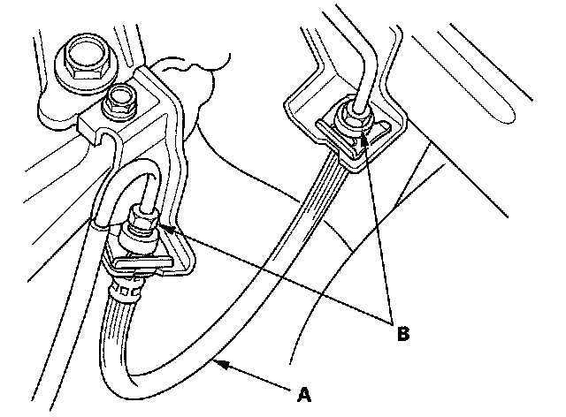
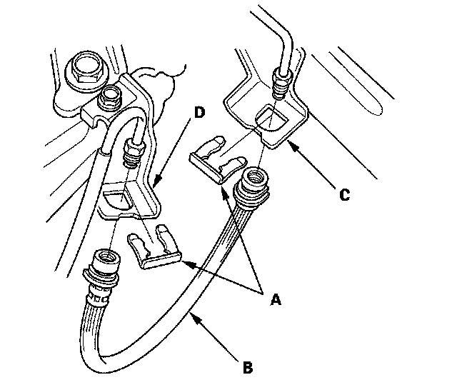
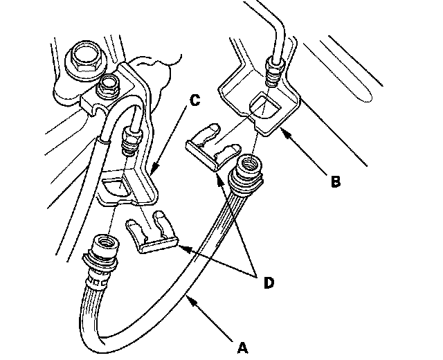
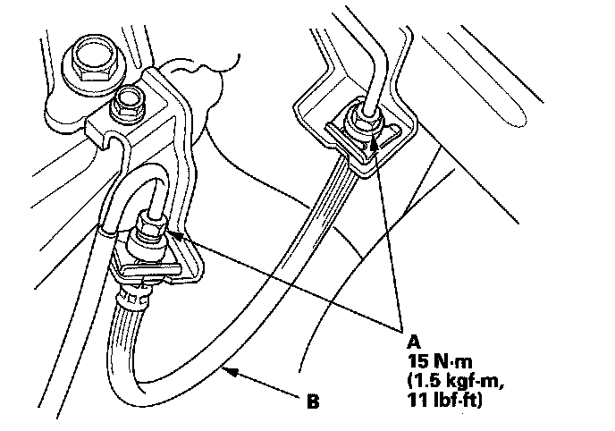

Hydraulic Hose: Service and Repair
Clutch Hose ReplacementNOTE: Replace the clutch hose if the hose is twisted, cracked, or if it leaks. Use fender covers to avoid damaging painted surfaces. Do not spill brake fluid on the vehicle; it may damage the paint. If brake fluid does contact the paint, wash it off immediately water.
1. Remove the brake fluid from the clutch master cylinder reservoir with a syringe.
2. Disconnect the clutch hose (A) from the clutch line (B).

3. Remove the clutch hose clips (A) from the clutch hose (B).

4. Remove the clutch hose from the body (C) and clutch hose bracket (D).
5. Install the clutch hose (A) on the body (B) and clutch hose bracket (C) with the new clutch hose clips (D).

6. Connect the clutch line (A) to the clutch hose (B).

7. Bleed the clutch hydraulic system.
8. Refill the brake fluid in the reservoir to the MAX (upper) level line.
9. Check the clutch operation, and check for leaks.
10. Test-drive the vehicle.